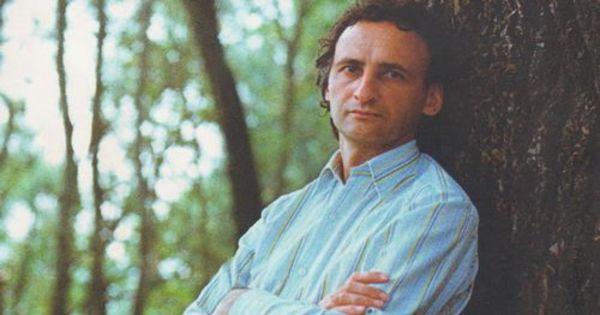
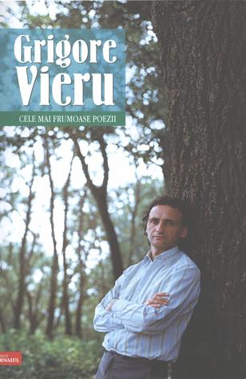
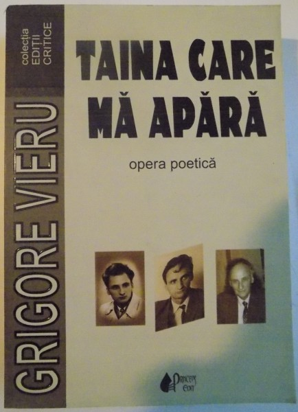

GRIGORE VIERU
Date biografice
Publicatii

Grigore Vieru s-a nascut la 14 februarie 1935 in Pererita, sat de pe malul stang al Prutului. Isi pierde tatal in razboi. Face studii primare si secundare in satul natal si apoi la Lipcani. Absolva, in 1958, Facultatea de Filologie a Institutului "Ion Creanga" din Chisinau. Debuteaza cu poezii in vremea studentiei, iar in 1957 ii apare primul volum de versuri, intitulat sugestiv "Alarma". Scrie multa poezie pentru copii, de asemenea este publicist, prozator, eseist, realizator de manuale scolare. Opera sa poetica este tradusa in limbile rusa, ucraineana, bielorusa, letona, lituaniana, estona, tadjica, turkmena. Versurile sale sunt cunoscute cititorilor din Bulgaria, Ungaria, Polonia, fosta Republica Democrata Germana, Finlanda, Franta. Statele Unite ale Americii. Operei sale, patrunsa in manuale si antologii, i se consacra numeroase studii. Comentatorii literari au depistat cateva constante ale liricii lui Grigore Vieru. Una ar fi aceea a dorului, pe care poetul il defineste sugestiv: " tot ce-i dor e neusor". Iar dorul devine rana nestinsa, vesnica, generatoare de poezie, el "se suprapune autobiograficului, dandu-i simplitatea eterna a vietii"(Victor Craciun). Apoi mama devine, dupa afirmatia criticului sus-citat, " matricea si in acelasi timp cheia intregii sale poezii". Este o mama eterna, implicand si constiinta "radacinii de foc" sau "mama-graiul" - cum o mai numeste poetul, si factorul generator de dainuire. O alta constanta a liricii lui Vieru ar fi permanenta regasire in spiritualitatea eminesciana, careia ii confera valoare de univers vital: "Eminescu este izvorul, ramul". Am putea aminti, printre alte constante, vocatia militanta a scrisului sau, caracteristica dealtfel si altor confrati luptatori intru poezie si limba. Iar vocabularul sau capata o sonoritate, o cantabilitate aparte, izvorata mai ales din cultivarea obarsiilor noastre lingvistice. Grigore Vieru este " un poet care si-a asumat greul unui grai trecandu-l prin inima sa" (Ioan Alexandru). A incetat din viata in data de 18 ianuarie 2009, la exact doua zile dupa un grav accident de circulatie in Spitalul de urgenta din Chisinau, in urma unui stop cardiac din care nu a mai putut fi resuscitat.


Opere
- Frumoasa-i limba noastra
- Ma rog de tine
- Faptura mamei
- Satele Moldovei
- Floarea-soarelui
- Stefan cel Mare
- Mihai Viteazul
- Decebal
- Alexandru Ioan Cuza
- Cantec de leagan
- Casa parinteasca
- Acasa,1968
- Mainele mamei
- Cantec de leagan pentru mama
- Pentru ea
- In limba ta
- Eminescu
- Trei culori
- Basarabie cu jale
- Sunt nationalist
- Scrisoare din Basarabia
- E-o liniste iubirea
- Autobiografica
- Un secol grabit
- Tata